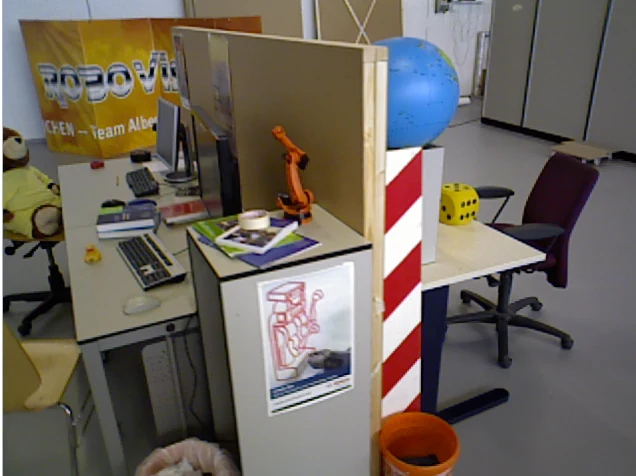
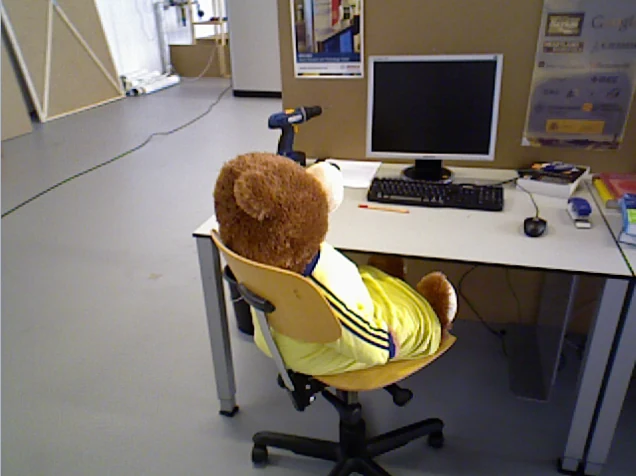
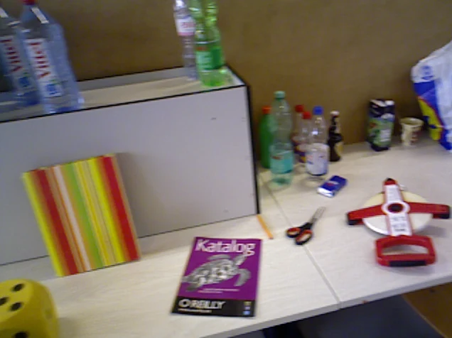
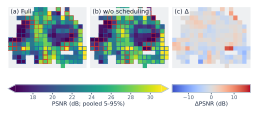
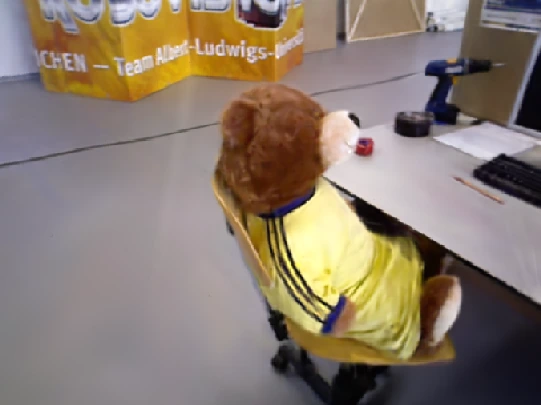
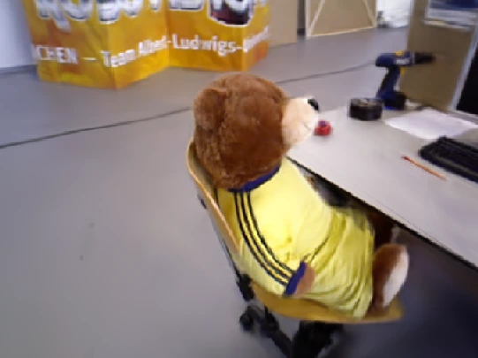

Tap to enlargeFrom a continual RGB-D stream to an evolving 3D Gaussian map. EliGSiR allocates bounded compute across view scheduling, supervision fidelity, and geometry growth, yielding higher-quality held-out renderings than RTG-SLAM and CaRtGS in the shown views (TUM RGB-D fr3).
23.02 dB in 155.5 stracked poses, 1.78× real time (CaRtGS: 20.10 dB, 2.65×)
21.52 dB with GT posesSplaTAM 19.42 dB at 15.87× real time
7.0× less image-space supervisionTUM fr3: 2786.9 M → 398.2 M px, with higher CVQ-AUC
Evaluated on 4 dataset familiesTUM RGB-D, Replica, ScanNet++/ScanNet and real Orbbec sensors
ABSTRACT
Conventional 3D Gaussian Splatting assumes a closed set of observations and long optimization schedules. Continual RGB-D mapping in contrast poses the problem that new observations arrive online, while previously reconstructed regions must be preserved. We present EliGSiR (Evidence-guided Load-adaptive Incremental Gaussian Splatting with Image Replay), a continual Gaussian mapper that controls how the available optimization budget is used as the reconstruction evolves. Map-Guided View Scheduling filters redundant incoming views and reconsiders retained views according to the current state of the map. Load-Adaptive Fidelity adjusts supervision resolution to the current mapping load instead of following a fixed resolution schedule. Targeted Geometry Growth separates depth supervision from Gaussian creation and adds geometric capacity only where repeated RGB-D observations indicate missing or misplaced structure. Together, these mechanisms adapt which views are optimized, how much image detail is used, and where the representation grows while mapping remains active. We evaluate EliGSiR on Replica, TUM RGB-D, ScanNet++, and real RGB-D sensor sequences, considering both the final reconstruction and the map available throughout acquisition. On TUM RGB-D fr3/long_office_household, EliGSiR reaches 21.52 dB with the same ground-truth mapping poses used by the controlled baselines, compared with 19.42 dB for SplaTAM. In the tracked-pose comparison, EliGSiR with live ORB-SLAM3 poses reaches 23.02 dB in 155.5 s, compared with 20.10 dB in 230.9 s for CaRtGS using its native tracker. We further evaluate reconstruction throughout acquisition and show how EliGSiR's adaptive view scheduling, supervision fidelity, and geometry growth improve the use of the available mapping budget.
01 / OVERVIEW VIDEO
Six minutes. The whole idea.
A narrated overview: motivation, method and baseline comparisons on TUM fr3.
PSNR overlays are per-frame and illustrative; measured results, including EliGSiR's 1.78× real-time factor with live-tracked poses on TUM fr3, are in Results.
02 / EXPLORE
Step inside the reconstruction.
Explore actual Gaussian map exports in your browser.
SCENE
TUM RGB-D fr3/long_office_householdEliGSiR map export · real-time result, no extra refinement
Tap to enlargeMethod overview. Retained observations provide recent and historical supervision, measured mapping cost controls image resolution, and RGB-D evidence guides where the Gaussian representation grows.
Map-Guided View Scheduling
Admission is not the same as replay.
A pose-based pre-filter and map-based overlap check admit views cheaply, using a maximum-gap rule instead of a fixed stride. Admission isn't permanent: retained views return to supervision when useful, prioritized by training-render errors accumulated in fixed world-space microcells over weak or regressed regions.
TUM FR3 INPUT FRAMES → REPLAY PRIORITY

TUM fr3 input frame A

TUM fr3 input frame B

TUM fr3 input frame C
training-render residuals → replay priority

Paper Fig. 5 · endpoint microcell quality: full method, w/o scheduling, and their difference. Aggregate quality stays similar while several weak regions improve by more than 10 dB.
Load-Adaptive Fidelity
Less detail now. More when it fits.
The scheduler measures recent mapping cost and picks from a small set of discrete resolutions (1/8× … 1×). The decision is reversible: source RGB-D stays intact and intrinsics are scaled with the grid.
LowHigh
REAL TUM FR3 FRAME · ILLUSTRATIVE CONTROLLER
Supervision grid1×
1×Native1/2×Half1/4×Quarter1/8×Eighth
Try low → high → low. The decision is reversible.
Targeted Geometry Growth
Depth can supervise without adding geometry.
Sparse structural support comes first, from a bounded set of depth-derived Gaussians. On revisits, insertion is suppressed where the map already explains observations and directed to unsupported or misplaced regions; otherwise depth supervises existing geometry without adding primitives. 3DGS-MCMC handles relocation, replacement and densification; it is not a contribution of this work.
SCHEMATIC · SIDE VIEW
Supervise existingThe current map already supports this surface.
04 / RESULTS
Quality. And the time it takes.
Table I, the refinement study and the ablations use separate runs and evaluation splits; absolute PSNR values should not be compared across these blocks.
TUM RGB-D fr3/long_office_household
↑ higher quality · ← less time
RTF = elapsed processing time / 87.14 s acquisition. Evaluation rendering excluded. Map states: ME mapping end, NC native completed pipeline, NT CaRtGS native tail, +30k PM post-mapping updates.
Methods at their evaluated map states using native finalization. Final quality and time should be read jointly; times are descriptive since hardware and timing scopes differ.
More compute after the stream.
Each refinement budget is a separate run. Select a budget to inspect its endpoint, not an interpolated training curve.
MAPPING END
23.27dB PSNR
144.9seconds total time
SSIM 0.807 · LPIPS 0.269 · Depth RMSE 0.459 m · 328.1 k Gaussians
No intermediate results are inferred between these endpoints.
05 / DURING MAPPING
How soon is a region useful?
CVQ is mean PSNR over currently evaluable 0.5 m world-space cells, CUC@20 the fraction at or above 20 dB, and CVQ-AUC integrates CVQ over source progress, counting missing renders as failures.
Full method CVQ-AUC 21.18 dB vs. 20.62 dB w/o Load-Adaptive Fidelity and 20.84 dB w/o Targeted Geometry Growth (TUM fr3).
The controller moves between 1/8×, 1/4×, 1/2× and 1× as backlog changes; cumulative supervision 2786.9 M → 398.2 M px (7.0×); mapping time 103.34 s → 89.15 s.
Fixed native resolution reaches a higher endpoint PSNR on TUM (19.36 vs 18.50 dB) and kitchen1 (22.91 vs 18.25 dB) at far more image-space work. Targeted Geometry Growth raises CUC@20 by 6.1/5.5/2.0 pp on TUM/ScanNet++/kitchen1, shrinking the ScanNet++ map from 1.109 M to 366.5 k Gaussians at similar PSNR.
06 / LOOK CLOSER
See the difference.
Drag the divider to inspect the paper's qualitative comparisons.
GROUP
BASELINECaRtGS


CaRtGS · PSNR 26.23 dBEliGSiR · PSNR 26.71 dB
‹ ›
＋NOT COMPARED
Depth
Metric depth (m), shared range 0.3–5.0
Qualitative preview
Panels from the paper's Figs. 7 and 8 and the overview-video renders, matched viewpoints; the views were selected to show clear differences, see Results for averages. Depth uses one shared metric range.
@misc{eligsir2027,
title = {EliGSiR: Continual RGB-D Mapping with Gaussian Splatting under Bounded Compute},
author = {Anonymous Authors},
year = {2027},
note = {Under review at IEEE ICRA 2027}
}
CODE
MAPPING CORE
eligsir
Gaussian mapping, adaptive supervision and replay.
Released upon acceptanceROS 2 TRANSPORT
eligsir-ros2
ROS ingress, lifecycle and mapping integration.
Released upon acceptanceSENSOR SYNCHRONIZATION
eligsir-rgbd-sync
RGB-D synchronization and shared message contracts.
Released upon acceptance
PyTorch + gsplat on CUDA or ROCm (incl. AMD Strix Halo), as a ROS 2 package; poses from ground truth, VO or a SLAM frontend.
Scope & limitations ＋
Real-time operation depends on sustained workload and currently needs manual tuning of several runtime parameters. Representation size grows with the explored scene. The method assumes a predominantly static scene and a sufficiently consistent trajectory; pose errors, dynamic objects and unreliable depth can produce inconsistent geometry.